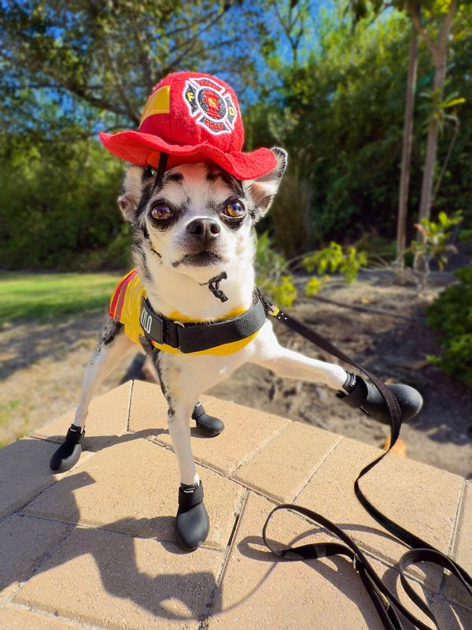

Source: New York Times
Author: Real McPerson
Date Published: 8/16/2025

For some reason still unknown to the authorities a creepy orphanage set on fire just two weeks ago. Worry not however, no orphans were hurt because of our adorable little hero, Lucky the Golden Retriever. Lucky was visiting with their owner who was looking to adopt one of the orphans when the fire started. Lucky, being the goodest boy there has ever been knew exactly what to do. He sprung into action carrying orphans out of the fire like a mother cat carries its young. By the time the firefighters arrived the building was cleared and they were able to quickly put out the fire before much damage was done. The mayor is now considering giving Lucky a key to the city, and let’s be honest who wouldn’t. Lucky’s heroics go to show that heroes can come in any shape, size, or form. Even the form of a dog.